Terminology#
This page provides definitions for some important terms used in the tqec codebase.
Also, we highlight and expand on some concepts that can not fit in the API Reference.
Block#
Represents quantum operations that encode some logical properties and are local in spacetime. The quantum operations within the block are carefully designed to map logical observables correctly in spacetime. At the same time, these operations generate syndrome information that prevents the circuit distance from being degraded due to physical error chains, ensuring fault tolerance.
By composing blocks, we can construct the desired mappings between logical operators while preserving the protection of the logical information. This is the essence of fault-tolerant quantum computation.
In tqec, a block is either a Cube or a Pipe.
The naming convention for a cube or a pipe is as follows:
The axes used for labeling are as shown in the figure below.
RGBaxes are synonymous toXYZaxes.We begin by labeling the boundary that is facing the X-axis first, then the one that is facing the Y-axis followed by the one facing the Z-axis.

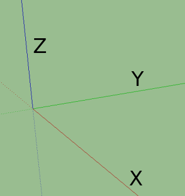
X, Y, Z axes#
The labels based on color of the boundaries are provided in the table below.
Color |
Boundary |
|---|---|
Red Wall |
X |
Green Half-Cube |
Y |
Blue Wall |
Z |
Yellow band |
H |
Open/Hole (no color) |
O |
Cube#
Represents the fundamental building block that occupies certain spacetime volume. The kind of cube determines the quantum operations that are applied within the cube. Currently we have the following kinds of cubes, and more cubes can be added in the future:

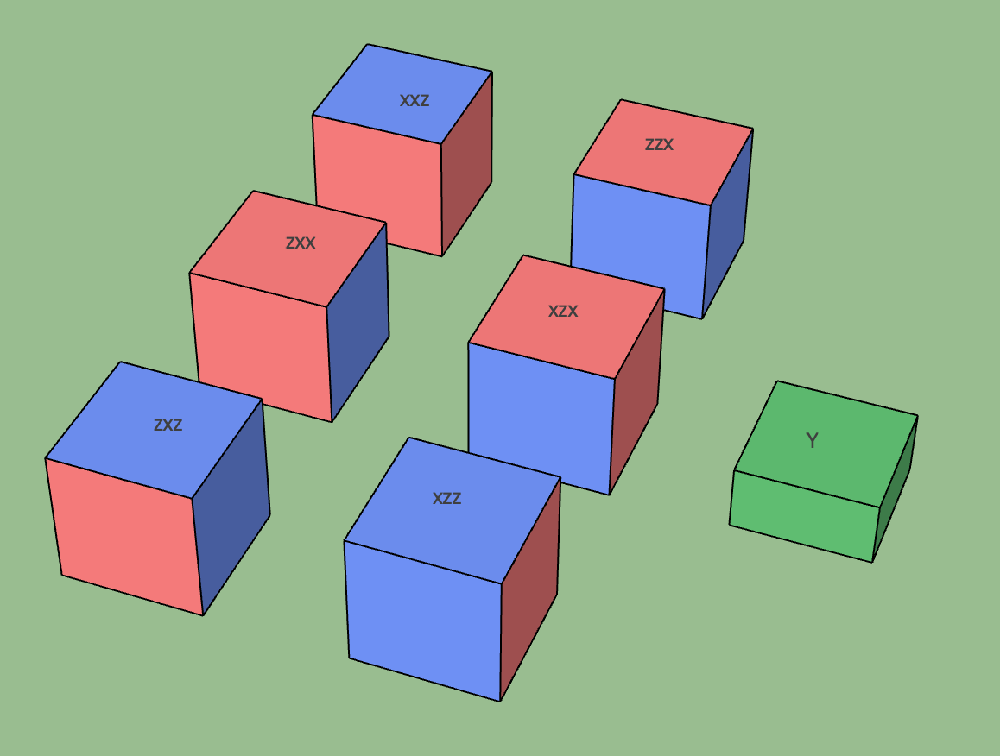
Different kinds of cubes#
ZXCube#
A cube whose faces are of X (red) or Z (blue) type. We assume each pair of opposite faces are of the same type.
Then the kind can be specified by the type of the faces looking from the XYZ directions. For example, the ZXZ cube in the
figure above has Z type faces along the X direction, X type faces along the Y direction, and Z type faces along the Z direction.
A ZXCube occupies \(\approx d^3\) spacetime volume, where \(d\) is the code distance.
Note that ZXZ, XZZ, ZXX and XZX cubes can represent a (trivial) logical computation by themselves, i.e. a logical memory experiment.
For example, the XZX cube can be used to represent a logical qubit with Z/X boundaries parallel to the X/Y axes. And the time boundary
is of X type, which means that the logical qubit is initialized and measured in the logical X basis.
Spatial Cube#
Unlike the other ZXCube, XXZ and ZZX cubes have all the spatial boundaries in the same basis. These cubes cannot connect to temporal pipes.
When connected with two or more spatial pipes, they form spatial junctions:

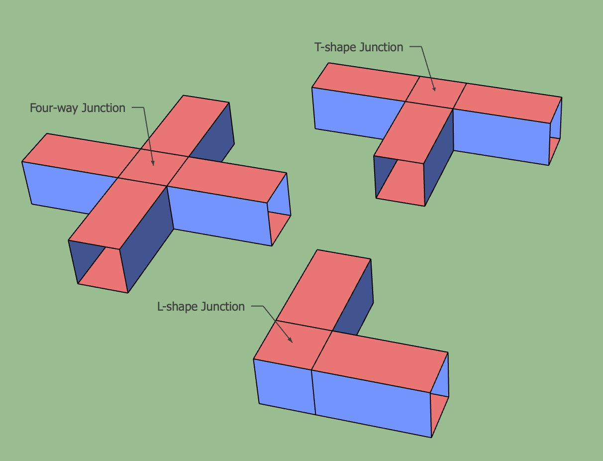
Spatial junctions#
The circuits that implement these spatial cubes are more complex than the circuits for the other cubes, and special care needs to be taken to avoid the hook errors from decreasing the circuit-level code distance.
Y Half Cube#
A green cube representing inplace Y-basis logical initialization or measurement as proposed in this paper. The cube’s function, whether for initialization or measurement, is determined by its connection to other cubes, either upwards or downwards.
A Y half cube occupies \(\approx d^3 /2\) spacetime volume, where \(d\) is the code distance. It is represented by the Y_HALF_CUBE member of LeafCubeKind.
Port#
A port is a special type of cube that represents the input or output of a logical computation.
It functions as a virtual cube, serving only as a placeholder for other sources or sinks of logical information.
Therefore, ports are not visualized in spacetime diagrams and occupy zero spacetime volume. It is represented by the PORT member of LeafCubeKind.
Conditional Cube#
A conditional cube is a cube whose kind is not fixed ahead of time but resolved at runtime to one of two branch kinds, selected by a classical bit. This is used to represent operations whose basis depends on the outcome of earlier measurements, for example the conditional-basis measurement that auto-corrects magic state injection.
The classical bit selecting the branch is described by a partial correlation surface (see CorrelationSurface) attached to the cube as its
condition. The two branches must be implementable by the same code patch connected to the same single pipe: they must differ, cannot be ports, and two ZXCube branches must
share the same wall bases along every axis but the one along which the connecting pipe runs.
Conditional cubes are represented by ConditionalCubeKind. Given the runtime values of the conditions,
resolve_conditional_kinds() replaces every conditional cube by its selected branch, producing a static block graph.
Pipe#
Represents the block that maps logical operators between different cubes. There are various types of pipes based on the boundary types and connection direction. Additionally, Hadamard transitions may occur in the pipe, which changes the basis of the logical operator passing through it.

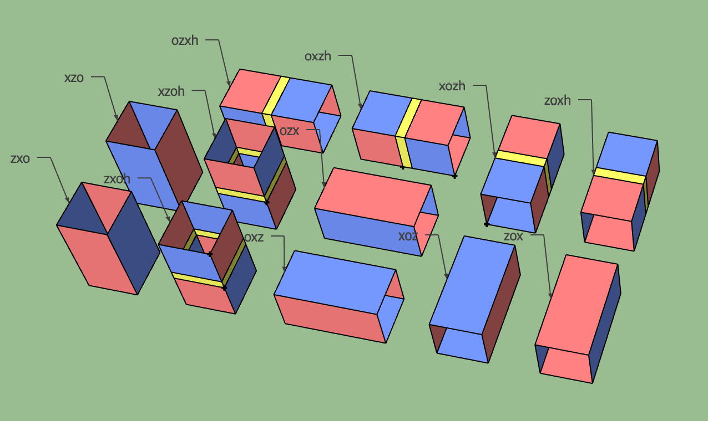
Different types of pipes#
It’s important to note that the pipe does not occupy spacetime volume by itself. Instead, the operations within the pipe replace the operations in the cubes it connects. The pipe’s visual representation in the diagram is exaggerated for clarity.

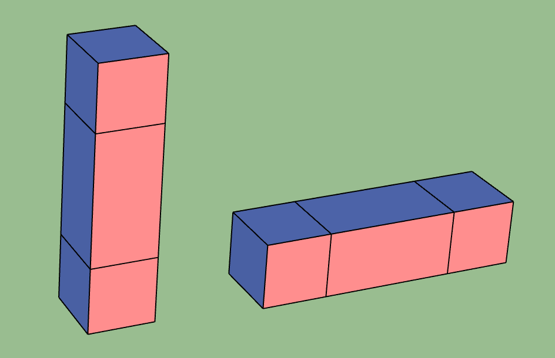
Example of pipes connecting cubes#
Each cube in the figure above should initially be thought of as an
memory experiment. The pipes modify the walls of these experiments. The first vertical pipe should be interpreted as a layer of memory circuit \(Mem_k\). It replaces \(MeasZ_k\) in the bottom cube and \(InitZ_k\) in the top cube with \(Mem_k\) layers. The horizontal pipe replaces the boundary walls of the two cubes it touches with connecting stabilizer measurements, along with appropriate data qubit initialization and measurement.
Correlation Surface#
A correlation surface is a product of stabilizers which establish a mapping from the input logical operator to the output logical operator of a surface code computation. The mapping implements the desired logical computation up to some sign depending on the parity of the physical initialization, measurements and stabilizer measurements included in the correlation surface. Just as surface code plaquettes are stabilizers of the data of individual physical qubits, correlation surfaces are stabilizers of computational paths (oftentimes trees) experienced by data qubits in spacetime.
Correlation surfaces are useful to track the movement of data. A logical observable is a set of measurements whose value corresponds to the outcome of measuring a logical operator. In tqec, we assume all the qubits are initialized to the +1 eigenstate of logical operators. Therefore, the sign is determined by the parity of a joint Pauli product measurement induced by a correlation surface. The tqec software package determines the reliability of a computation’s structure by transforming the correlation surfaces that it supports into a list of physical measurements and emitting the list as OBSERVABLE_INCLUDE instructions in a Stim circuit which may be sampled from.
Here we take the movement of a logical qubit for example:

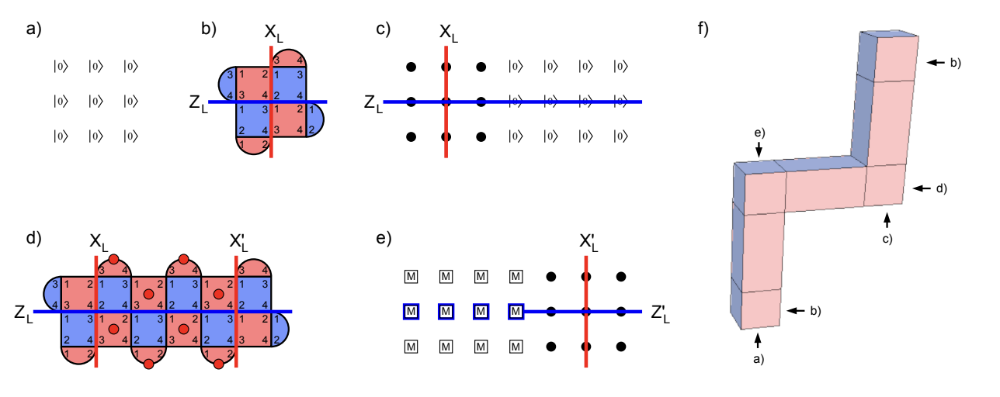
Movement of a logical qubit#
The movement operation maps \(Z_L, X_L\) logical operators at input to \(Z_L^{\prime}, X_L^{\prime}\) at output. Firstly, we show in detail why the structure and circuits above implement the movement of a logical qubit.
All data qubits initialized to \(|0\rangle\).
\(2k + 1\) rounds of stabilizer measurement.
Beginning to extend the logical qubit with more data qubits initialized to \(|0\rangle\). Black dots represent data qubits doing nothing. \(Z_L\) can be extended without sign change across these \(|0\rangle\) values.
\(2k + 1\) rounds of stabilizer measurement during which stabilizers indicated with red dots are used to move \(X_L\). The parity of any chosen round of these measurements sets a sign relationship between \(X_L\) and \(X_L^{\prime}\). Our convention is to choose the earliest round.
\(Z\) basis measurement of data qubits. The parity of the blue highlighted raw values sets a sign relationship between \(Z_L\) and \(Z_L^{\prime}\).
Note that the sign relationship described above depends on the measurement outcomes, which are error-prone and need error correction.
Tracking the process of logical operator movement above, we can get the following two correlation surfaces:

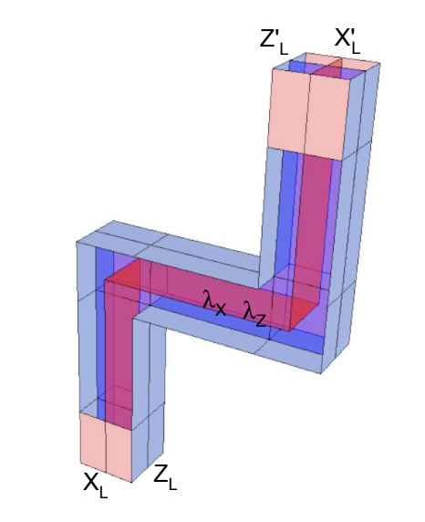
Correlation surfaces, red for X and blue for Z#
You can think of constructing the correlation surface as moving a line of logical operators through the structure, only allowing the logical operators to attach to walls with the same basis.
Template#
In tqec, a template is an object that can, from an integer value representing the
scaling factor \(k\) (with the code distance \(d\) checking \(d = 2k + 1\) for the surface code),
can generate a \(2\)-dimensional array of positive integers.
Example
The following array is an example of what can be generated by a template:
1 5 6 5 6 2
7 9 10 9 10 11
8 10 9 10 9 12
7 9 10 9 10 11
8 10 9 10 9 12
3 13 14 13 14 4
The returned \(2\)-dimensional array entries each represent an index into a user-provided
mapping associating these indices to Plaquette instances.
The only exception is the value 0 that is associated to the absence of plaquette
by convention.
Example
The $2$-dimensional array given as example above can represent the usual logical qubit from surface code research papers:

Usual tiling of plaquettes to build a logical qubit using the surface code.#
To see the correspondence more clearly, one can map the indices 1, 2,
3, 4, 5, 8, 12 and 14 to the “no plaquette” index 0
and print 0 with . for visual clarity:
. . 6 . 6 .
7 9 10 9 10 11
. 10 9 10 9 .
7 9 10 9 10 11
. 10 9 10 9 .
. 13 . 13 . .
Templates are the abstraction layer that allows most of tqec internals to be
independent of the chosen code distance.
Sub-template#
Sub-templates are defined as square \(2\)-dimensional arrays of fixed odd size. They are systematically extracted from a contiguous portion of a larger template.
Example
The array:
1 5 6
7 9 10
8 10 9
is a valid sub-template of the full example given in the Template section.
Important
Sub-templates center (which is always well defined for a odd-sized square) is always extracted from a valid entry within the original template. The other sub-template entries might be extracted from outside the original template.
The following sub-template:
. . . . .
. 1 5 6 5
. 7 9 10 9
. 8 10 9 10
. 7 9 10 9
is also a sub-template of the full example given in the Template.
Its top and left borders are filled with 0 (usually represented by a .) because
out-of-bounds accesses for templates are supposed to be 0.
Plaquette#
A plaquette is a specific quantum circuit. There are multiple bells and whistles
around that simple definition in tqec code, but all of them are due to implementation
details and do not matter here.
The quantum circuit represented by a plaquette are supposed to be:
spatially-local,
temporally-local,
with a fully explicit and precise gate scheduling.
Spatial locality means that the quantum circuit representing any plaquette should only use a few qubits that are spatially close on a \(2\)-dimensional array grid of qubits.
Temporal locality means that the quantum circuit depth should be constant and short.
Explicit gate scheduling requires each and every gate in the circuit to be explicitly scheduled at a precise time (or moment) in the quantum circuit.
These conditions make plaquettes easily representable as visual \(2\)-dimensional pictures. It is worth noting that the
numbering of a plaquette represents the order in which the data qubits interact with the measure qubit. The interaction
order resembles a Z or inverted N shape to ensure commutation relationships with the neighboring stabilizers [7] [8].
The examples below utilize the Z shape.
Examples
One of the plaquette measuring a XXXX stabilizer can be represented as follow

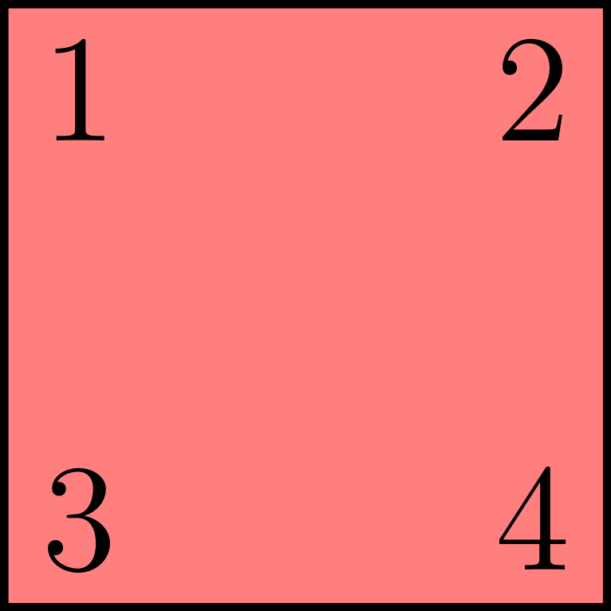
XXXX plaquette.#
and corresponds to the following quantum circuit

Quantum circuit measuring the XXXX stabilizer.#
One of the plaquette measuring a ZZZZ stabilizer can be represented as follow

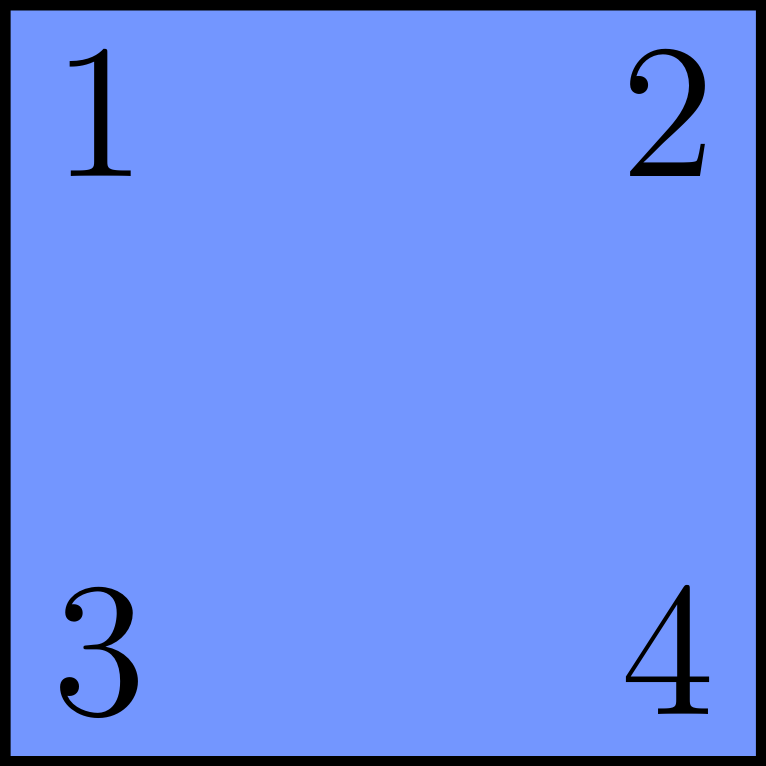
ZZZZ plaquette.#
and corresponds to the following quantum circuit

Quantum circuit measuring the ZZZZ stabilizer.#
One of the plaquette measuring a XX stabilizer can be represented as follow

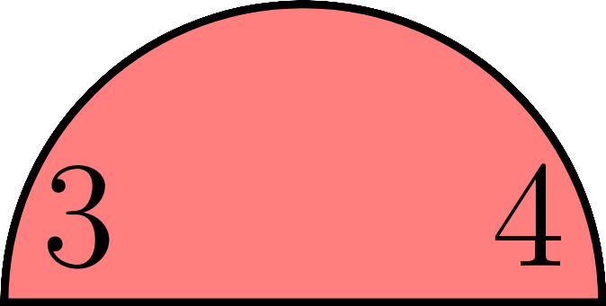
XX plaquette.#
and corresponds to the following quantum circuit

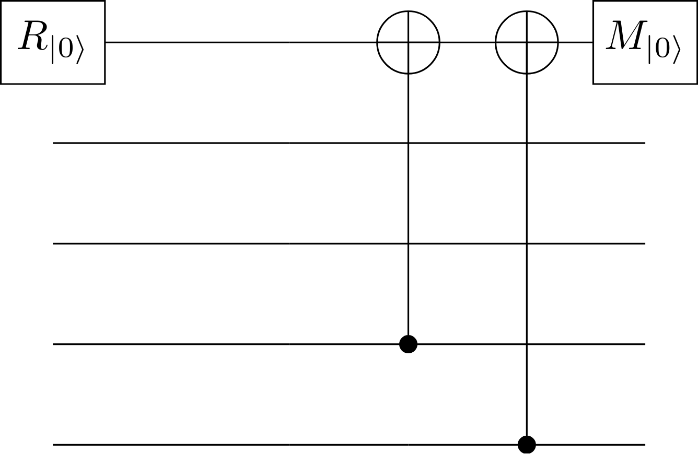
Quantum circuit measuring the XX stabilizer.#
Detector#
A detector is a set of one or more measurements that are supposed to have a deterministic parity in the absence of errors [9].
Pauli Frame#
The Pauli frame is a classical data structure that, in each execution of a quantum program, stores the effect of the Pauli operations that were determined to be necessary by the decoder and program specification [10]. The Pauli correction is given by the parity of measurements on correlation surfaces. The parity is directly flipped when decoding. The tracking only delays the circuit if an operation which needs the correct Pauli frame is scheduled in a blocking manner.
TQEC does not track physical or logical Pauli frames and instead restricts its focus to correlation surface parities. Propagating a physical or logical Pauli frame only matters insofar as matching a particular pair of detection events flips nearby correlation surfaces, and this is given by the circuit’s detector error model. To construct this, it suffices to restrict our attention to correlation surface parities.